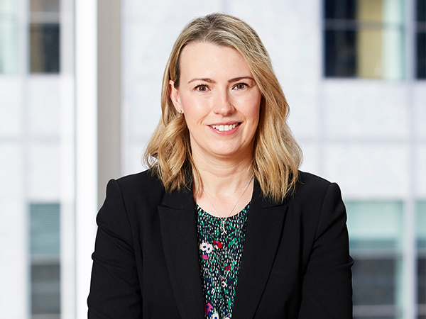

What undue influence means in probate law
Undue influence in the probate context is narrower and harder to prove than in equity. It is not enough to show that someone had the opportunity to influence the will-maker, or that they persuaded the will-maker to change their will. The person alleging undue influence must prove that the will-maker's free will was overborne by coercion — that the will does not reflect the will-maker's true intentions but rather the will of the influencer.
This distinction is critical: adult children frequently persuade parents about estate planning; carers often discuss wills; family members may apply emotional pressure. None of this, standing alone, constitutes probate undue influence. The law requires proof of coercion — that the testator was not a free agent when making the will.
The classic formulation comes from Wingrove v Wingrove (1885): the question is whether the will-maker was "able to exercise a free and independent judgment" or whether their mind was "overborne by pressure." The High Court in Bridgewater v Leahy (1998) confirmed that mere influence — even influence flowing from a relationship of trust and confidence — is not enough. There must be coercion.
Common warning signs — patterns that suggest undue influence
Isolation of the Will-Maker
The influencer isolates the elderly person from family, friends, and independent advisors. They control who visits, who telephones, and what information reaches the will-maker. This creates dependency and removes alternative sources of advice or support.
Dependency and Control
The will-maker becomes dependent on the influencer for daily needs — meals, medication, transport, access to the outside world. The influencer uses this dependency to shape the will-maker's decisions about their estate.
Rapid, Unexplained Will Changes
A series of wills made in quick succession, each increasingly favouring the influencer. The changes cannot be explained by ordinary family motives and coincide with periods of the influencer's increased involvement in the will-maker's life.
New Beneficiary Controls Solicitor Access
The influencer arranges the solicitor appointment, is present during instructions, answers questions on the will-maker's behalf, or communicates instructions to the solicitor independently. The will-maker has no private consultation with the solicitor.
Will Contrary to Long-Standing Intentions
The new will departs radically from a pattern of consistent estate planning over many years. A parent who always intended to divide equally among children suddenly disinherits all but one — typically the person now controlling access.
Vulnerability Exploited
The will-maker is vulnerable through age, illness, grief, cognitive decline, or emotional distress. The influencer exploits this vulnerability to impose their will at a time when resistance is diminished.
The Briginshaw standard of proof
Allegations of undue influence are serious — they amount to an assertion of wrongful conduct. Under the Briginshaw v Briginshaw (1938) principle, the court must be satisfied to a higher standard commensurate with the gravity of the allegation. This does not change the civil standard (balance of probabilities) but requires that the evidence be clear, cogent, and precise. The more serious the allegation, the stronger the evidence must be.
This means a mere suspicion of undue influence, or an inference drawn from opportunity alone, will not satisfy the court. The evidence must support a finding that coercion actually occurred and that the will does not represent the testator's true intentions.
In practice, Briginshaw operates as a screening mechanism. The court will assess the evidence as a whole — not piece by piece — and ask whether the combined weight of the evidence, assessed in light of the gravity of the allegation, establishes that coercion probably occurred. A single piece of weak evidence may not be enough, but multiple strands of independent evidence pointing in the same direction can satisfy the standard even if no single piece is conclusive.
How undue influence differs from related doctrines
Undue influence is often confused with other grounds for challenging a will. Understanding the distinctions is important:
- Undue influence vs lack of capacity: Capacity concerns whether the will-maker understood what they were doing. Undue influence assumes the will-maker had capacity but that their free will was overborne. In practice, these grounds often overlap — a vulnerable will-maker with diminished capacity is also more susceptible to coercion. A comprehensive challenge may plead both.
- Undue influence vs suspicious circumstances: Suspicious circumstances (the doctrine from Wintle v Nye) shifts the evidentiary burden to the propounder of the will to prove knowledge and approval. Undue influence is a separate affirmative allegation that the person alleging it must prove. The distinction is important: if you cannot prove undue influence, you may still succeed on suspicious circumstances if the court shifts the burden to the propounder.
- Undue influence vs family provision: A family provision claim accepts the will is valid but seeks provision for an eligible person. Undue influence challenges the will itself. A family provision claim is often easier to prove than undue influence — if you are an eligible person and the will makes inadequate provision, a family provision claim may be a more practical route even if you also suspect undue influence.
- Undue influence vs equitable undue influence: Equitable undue influence (from Johnson v Buttress) applies to lifetime transactions — gifts, transfers, contracts. It is broader and easier to establish, particularly where a relationship of trust and confidence is presumed. Probate undue influence is narrower. An elderly parent pressured by a carer to transfer their house during their lifetime faces a different legal test than if the carer pressured them to change their will.
Evidence that matters in undue influence cases
Undue influence is rarely proved by direct evidence — there is seldom a witness who saw the influencer say "change your will or I will abandon you." The court draws inferences from the totality of the surrounding circumstances. The quality of your evidence — its detail, its independence, its contemporaneity — is what matters. Below are the categories of evidence that carry the most weight.
- All versions of the will and any codicils — the pattern of changes over time is critical
- Solicitor file notes — who attended conferences, who gave instructions, and whether private consultation occurred
- Medical records — evidence of vulnerability, cognitive state, dependency, and susceptibility to influence
- Witness statements from family, friends, and carers — describing changes in behaviour, access, and control
- Records of the influencer's involvement — who arranged solicitor visits, transported the will-maker, managed finances
- Correspondence showing the influencer's control over communication and information flow
- Timeline of key events — will changes, hospitalisations, moves to new accommodation, relationship changes
- Evidence of the will-maker's previously expressed intentions — earlier wills, statements to family, letters of wishes
The will file — the solicitor's role
The solicitor who prepared the will is often the most important witness in an undue influence case. Their file notes, attendance records, and recollection of who was present during instructions can make or break a case. A solicitor who:
- Took instructions from the will-maker alone, in private, with no other person present
- Assessed and recorded the will-maker's testamentary capacity
- Recorded the will-maker's own stated reasons for the dispositions in the will
- Was satisfied that the will-maker was acting freely and voluntarily
- Made contemporaneous file notes of the conference
— provides strong evidence against undue influence. Conversely, a solicitor who took instructions from the alleged influencer, who never saw the will-maker alone, whose file notes are absent, incomplete, or appear to have been created after the fact, or who was chosen by the influencer (not the will-maker) may support an inference that the process was compromised. A solicitor who is also the influencer's solicitor (or who acts for the influencer in other matters) raises clear conflict questions.
Medical evidence — vulnerability and susceptibility
Medical records are essential to establishing the will-maker's vulnerability. The more vulnerable the will-maker, the less pressure is required to overbear their will. Key medical evidence includes:
- Diagnoses of conditions affecting cognition — dementia, delirium, stroke, brain injury
- Records of medication — particularly medications affecting mood, cognition, or suggestibility
- Clinical notes describing the will-maker's presentation — confusion, distress, dependency
- Evidence of physical frailty creating practical dependency on the influencer
- Psychiatric or psychological assessments — particularly where the will-maker was grieving, depressed, or anxious
- Hospital admission records coinciding with will changes
Medical evidence does not need to establish incapacity — indeed, undue influence assumes capacity. It establishes vulnerability, which is the context in which coercion operates. A robust, independent, strong-willed person with full capacity is far harder to coerce than a frail, dependent, recently bereaved person with early cognitive decline.
Witness evidence — what family, friends, and professionals saw
Lay witness evidence is often the richest source of information about undue influence. The court gives weight to independent witnesses — neighbours, long-standing friends, treating doctors, former solicitors — whose evidence is not coloured by the financial interest in the outcome. Key topics for witness evidence include:
- Changes in the will-maker's behaviour after the influencer entered their life
- Statements the will-maker made about their estate planning intentions — both before and during the period of alleged influence
- Observations of the influencer's conduct — controlling access, speaking for the will-maker, isolating them
- The will-maker's expressed fear, anxiety, or reluctance — particularly statements suggesting they felt unable to resist the influencer
- Changes in the will-maker's living conditions, appearance, or demeanour
- Whether the will-maker expressed a desire to see particular people but was prevented from doing so
Contemporaneous records — diary entries, emails, text messages — are far more persuasive than recollections reconstructed years later. If you suspect undue influence, encourage witnesses to write down what they observed, with dates, while their memory is fresh.
Financial records — following the money
Financial evidence can reveal the influencer's motive and the extent of their control. Key financial evidence includes:
- Bank statements showing the will-maker's accounts — who had access, who made withdrawals
- Transfers of money or property from the will-maker to the influencer before death
- Changes to account signatories or the addition of the influencer as a joint account holder
- Payment of the will-maker's expenses — or failure to pay them — by the influencer
- The influencer's own financial circumstances — were they in financial difficulty at the relevant time?
- Property transfers — changes to land title, particularly transfers for nominal or no consideration
A pattern of financial exploitation before death — through POA misuse, joint accounts, or asset transfers — strongly supports an inference that the will was also the product of improper influence. The court looks at the whole picture: if the influencer was systematically extracting value from the will-maker during life, it is easier to infer they did the same through the will.
The timeline — constructing the narrative
An undue influence case is ultimately a story about what happened, supported by evidence. A detailed timeline is the backbone of that story. Your timeline should map:
- When the will-maker's previous wills were made, and what they said
- When the influencer entered the will-maker's life, and in what capacity
- When the will-maker's health declined — hospitalisations, diagnoses, changes in living arrangements
- When the will-maker's contacts with family and friends changed — calls stopped, visits were blocked
- When each will (or codicil) was made, and who benefited
- When key financial transactions occurred — transfers, account changes, property dealings
- When the will-maker died, and when probate was applied for
A well-constructed timeline can reveal patterns that individual pieces of evidence do not — such as a will change occurring within days of a hospital discharge into the influencer's care, or a series of financial transactions accelerating in the weeks before a new will was made.
What the court looks for — the evidentiary checklist
Drawing on the leading cases, the court will typically examine the following factors when assessing whether undue influence has been proved:
- The nature and intensity of the relationship: Was the influencer in a position of dominance? Did the will-maker depend on them?
- The will-maker's vulnerability: Age, health, cognitive state, emotional state, dependence
- The influencer's opportunity: Were they present when the will was made? Did they control access to the will-maker?
- The magnitude of the benefit: How much did the influencer receive compared to what they would have received under previous wills?
- The departure from previous intentions: Is the new will consistent with the will-maker's long-held plans and values?
- The process of will-making: Who chose the solicitor? Who gave instructions? Was there a private conference?
- The influencer's conduct: Were there lies, concealment, or manipulation? Did the influencer control information?
- Any independent reasons for the change: Is there an innocent explanation — such as a genuine falling-out with previously favoured beneficiaries?
The court weighs these factors together. No single factor is determinative — the question is whether the combined circumstances satisfy the court, to the Briginshaw standard, that the will-maker's free will was overborne.
NSW vs QLD — legal framework for undue influence
Undue influence is a common law doctrine recognised in both New South Wales and Queensland. Neither state has codified the doctrine — it is applied by the courts according to established common law principles. However, the statutory context, court procedures, and practical considerations differ between the two states.
Undue Influence in Wills — New South Wales
Governing law
The Succession Act 2006 (NSW) governs wills and estate administration in New South Wales. Undue influence is not codified in the Act — it remains a common law doctrine applied by the Supreme Court of NSW. The Act does, however, provide the procedural framework within which undue influence claims are brought, including the probate application process (Part 2), the court's powers in probate matters (Part 3), and the family provision regime (Chapter 3).
Key NSW cases on undue influence
- Bridgewater v Leahy (1998) 194 CLR 457: The leading High Court authority. Confirmed that mere influence, even in a relationship of trust and confidence, is not enough — there must be coercion. The case concerned a nephew who obtained a large benefit from his uncle but the uncle was held to have acted freely.
- Nicholson v Knaggs [2009] VSC 64: Though Victorian, frequently applied in NSW. Detailed analysis of the distinction between influence and coercion, and the significance of the will-maker having independent legal advice.
- Estate of Griffith (1995) 217 ALR 284: NSW Court of Appeal. Confirmed the Briginshaw standard applies to undue influence allegations and that the evidence must be "clear and cogent."
- Winter v Crichton (1991) 23 NSWLR 116: Examined the circumstances in which a presumption of undue influence may arise in the probate context — noting that the presumption is more readily drawn where the influencer obtained a substantial benefit and was in a position of dominance.
- Petrovski v Petrovski [2016] NSWSC 1769: A recent application of the undue influence principles in a family context — a son alleged to have coerced his elderly mother into changing her will.
Probate procedure and timing
Probate is usually applied for within six months of death. A person who suspects undue influence should act before probate is granted if possible — once probate is granted and assets are distributed, recovery becomes significantly more difficult. The procedure for challenging a will before probate involves:
- Caveat: Under Supreme Court Rules Part 78, a caveat can be lodged to prevent probate being granted pending investigation. The caveat must state the interest of the caveator and the grounds of objection. It remains in force for six months (renewable) unless removed by the court.
- Warning to caveat: The propounder of the will may issue a warning requiring the caveator to "appear" — that is, to file a statement of claim setting out their grounds for challenging the will. If the caveator does not appear, the caveat lapses.
- Statement of claim: The challenge is commenced by filing a statement of claim in the Probate List of the Equity Division of the Supreme Court, pleading undue influence and any alternative grounds (lack of capacity, lack of knowledge and approval).
The Probate List
Undue influence cases in NSW are heard in the Probate List of the Equity Division of the Supreme Court. Specialist judges with significant experience in estate disputes hear these matters. The Probate List operates under practice notes that encourage early mediation and case management. Most cases settle before trial — but settlement depends on the quality of the evidence available to each side.
Costs in undue influence cases
Costs are at the discretion of the court. In probate litigation, two exceptions to the usual rule (costs follow the event) are relevant:
- The probate exception: Where the testator's own conduct or vulnerability caused the litigation — for example, where the testator made a will in circumstances of ambiguity or vulnerability — the court may order that costs be paid from the estate regardless of the outcome. This encourages proper investigation of suspicious circumstances.
- The undue influence exception: Where the party propounding the will is found to have exerted undue influence, they will almost certainly be ordered to pay costs personally — meaning the costs come from their own pocket, not from the estate. Conversely, a party who brings an undue influence allegation that fails, where the allegation was reasonably based on the evidence, may still obtain a costs order from the estate if the testator's conduct contributed to the litigation.
Costs in undue influence litigation are significant — contested hearings can cost hundreds of thousands of dollars. Early realistic assessment of the evidence is essential.
NSW Trustee & Guardian
Where the will-maker was under the financial management of the NSW Trustee & Guardian at the time the will was made, this may be relevant. The NSW Trustee & Guardian's records may contain evidence about the will-maker's capacity, vulnerability, and the circumstances in which estate planning decisions were made. In some cases, the NSW Trustee & Guardian may be a party to the proceedings.
Interaction with family provision claims
An undue influence challenge and a family provision claim can be brought together in the same proceedings. The court will determine the validity of the will first — if the will is set aside for undue influence, the family provision claim may be brought against the estate under the previous valid will or under the intestacy rules. If the undue influence claim fails, the family provision claim proceeds against the impugned will. This dual strategy is common and often prudent.
Undue Influence in Wills — Queensland
Governing law
The Succession Act 1981 (QLD) governs wills and estate administration in Queensland. As in NSW, undue influence is not codified in the Act — it is a common law doctrine applied by the Supreme Court of Queensland. The Act does contain several provisions particularly relevant to undue influence disputes:
Key statutory provisions
- s 10(2) — Positional signature: A unique Queensland requirement. If the will-maker signs in a particular place (rather than at the end), the will may be invalid. This can become relevant where the will's execution was managed by the alleged influencer and the formal requirements were not properly observed.
- s 24(2) — Lost will presumption: If a will was last traced to the testator and cannot be found after death, it is presumed to have been destroyed with intent to revoke. In undue influence cases, this may be relevant where an earlier will that was less favourable to the influencer has disappeared — raising an inference that the influencer destroyed it.
- s 6 — Passing over an executor: The court may pass over a named executor and grant letters of administration to another person where the named executor is unsuitable. This can be used where the executor is the alleged influencer.
- s 41 — Family provision: Part 4 of the Act provides the family provision regime. As in NSW, a family provision claim can be brought alongside an undue influence challenge.
Key QLD cases on undue influence
- Bridgewater v Leahy (1998) 194 CLR 457: The leading High Court authority — a Queensland case. The uncle's transfer of property to his nephew was challenged. The High Court drew a clear distinction between equitable undue influence (which may arise from a relationship of trust and confidence) and probate undue influence (which requires coercion).
- Re Estate of Hodges (1988) 1 Qd R 196: Queensland Supreme Court decision examining the circumstances in which undue influence may be inferred from the relationship between the will-maker and the beneficiary, combined with the beneficiary's involvement in the will-making process.
- Banks v Goodfellow (1870) LR 5 QB 549: Although an English case, frequently applied in Queensland. Established the classic test for testamentary capacity — often relevant because undue influence and capacity challenges are brought together.
- Re Estate of Ward [2010] QSC 160: A recent Queensland application of the undue influence principles, examining the significance of the solicitor's evidence and the will-maker's independent reasons for the dispositions.
- Frizzo v Frizzo [2011] QCA 234: Queensland Court of Appeal decision considering the interaction between undue influence, suspicious circumstances, and the Briginshaw standard.
Criminal implications — will forgery and fraud
Queensland's Criminal Code contains provisions particularly relevant to the most serious forms of will-related misconduct:
- s 488 — Forging or uttering a forged will: Carries up to 14 years imprisonment. Where undue influence escalates to the actual fabrication of a will — for example, where the influencer forges the will-maker's signature — this provision may apply.
- s 408C — Fraud: Carries up to 12 years imprisonment (if the value exceeds $30,000). May apply to systematic schemes to extract assets from an estate through will manipulation.
- s 523 — Stealing a testamentary instrument: Theft of a will — applicable where a will has been taken or concealed by the influencer.
These criminal provisions create a different dynamic in Queensland compared to NSW. The involvement of police or the Director of Public Prosecutions is more common in serious Queensland undue influence cases. Legal advice should consider both civil and criminal dimensions.
QCAT jurisdiction — overlapping POA and guardianship issues
QCAT has jurisdiction over enduring powers of attorney and guardianship matters under the Powers of Attorney Act 1998 (QLD) and the Guardianship and Administration Act 2000 (QLD). Where undue influence over the will is accompanied by misuse of an enduring power of attorney or improper conduct as an attorney, QCAT can:
- Review the attorney's conduct and order accounts
- Suspend or revoke the power of attorney
- Appoint an administrator or guardian
- Order the attorney to compensate the adult for losses
These QCAT remedies are available while the older person is alive or, in some cases, after death. They can be pursued alongside a will challenge in the Supreme Court. The Public Guardian (QLD) can investigate complaints about attorneys and, in urgent cases, suspend an attorney's powers pending a QCAT hearing.
Probate procedure and timing in Queensland
The procedure for challenging a will on grounds of undue influence in Queensland is similar to NSW, though terminology and rules differ:
- Caveat: Lodged with the Supreme Court registry to prevent a grant of probate. The caveat must state the caveator's interest and the grounds of objection.
- Warning and appearance: The propounder may issue a warning requiring the caveator to appear and file a claim.
- Originating application: The claim is commenced by originating application in the Supreme Court, pleading undue influence and any alternative grounds.
As in NSW, early action — before probate is granted — is strongly recommended. The caveat procedure is the primary mechanism for preventing probate being granted while an undue influence challenge is investigated.
Costs in Queensland
Queensland applies similar costs principles to NSW. The probate exception (costs from the estate where the testator's conduct caused the litigation) and the undue influence exception (personal costs against the influencer) are both recognised. The court has a broad discretion and will consider the conduct of the parties, any offers of settlement, and the reasonableness of the positions taken.
Interaction with family provision claims
As in NSW, a family provision claim under Part 4 of the Succession Act 1981 (QLD) can be brought alongside an undue influence challenge. The two claims are often pleaded together. If the will is set aside for undue influence, the family provision claim is assessed against the earlier valid will or the intestacy rules. If the undue influence claim fails, the claim proceeds against the challenged will.
Common mistakes in undue influence cases
Undue influence litigation is complex, expensive, and emotionally charged. Mistakes on either side — by those alleging undue influence and by those defending against allegations — can damage a case irreparably. Understanding the most common mistakes helps you avoid them.
Mistakes by those alleging undue influence
Confronting the suspected influencer directly
This is the single most common and damaging mistake. A family member who suspects undue influence calls or visits the influencer and accuses them directly. The result is predictable: the influencer destroys evidence, further isolates the will-maker, accelerates asset transfers, or changes solicitors. If you suspect undue influence, do not confront the influencer — seek legal advice first. The element of surprise is valuable.
Assuming opportunity equals undue influence
Many people believe that because the influencer had the opportunity to pressure the will-maker — they lived together, or they were the carer, or they were present when the will was made — undue influence is proved. It is not. The law requires evidence of coercion. Opportunity is one factor the court considers, but standing alone it is not enough. A realistic assessment of the evidence, not just the suspicion, is essential before commencing proceedings.
Waiting until after probate is granted
Challenging a will after probate is granted is significantly harder. The executor has authority to deal with assets and may distribute them to beneficiaries or third parties. Recovering distributed assets requires separate proceedings against the recipients. If you suspect undue influence, act before probate is granted — a caveat can be lodged to preserve the position.
Relying solely on family suspicion
The court requires objective evidence — not just family members' beliefs, however sincerely held. A claim based on "we all know what happened" without documentary, medical, or independent witness evidence will fail. The Briginshaw standard demands clear, cogent, and precise proof. Family suspicion is a starting point for investigation, not evidence in itself.
Overlooking capacity issues
Undue influence and lack of testamentary capacity often overlap. A comprehensive challenge should consider both. If the will-maker lacked capacity, the will is invalid regardless of influence — and proving incapacity may be easier than proving undue influence. Pleading both grounds, with appropriate medical evidence, is often the strongest strategy.
Ignoring the costs risk
Undue influence litigation is expensive. A contested probate hearing can cost hundreds of thousands of dollars. The person bringing the claim faces the risk that if they lose, they may be ordered to pay the other side's costs as well as their own. Before commencing proceedings, obtain a realistic costs estimate and advice on the costs risks. A family provision claim — which is often cheaper and carries less costs risk — may be a better option in some cases.
Mistakes by those defending against undue influence allegations
Assuming that being a beneficiary means you are safe
A person named as a major beneficiary in a will that represents a radical departure from previous estate planning is at risk of an undue influence challenge — particularly if they were closely involved in the will-maker's care or in the will-making process. Being named in the will is not a shield. The court will examine how the will came to be made, not just what it says.
Destroying or concealing evidence
Destroying documents, deleting emails, or "losing" records after an allegation is made is disastrous. The court can draw adverse inferences from the destruction of evidence — effectively treating the destruction as evidence of guilt. If you are facing allegations, preserve everything. Your solicitor will advise on what is relevant and what must be disclosed.
Responding emotionally to the allegation
Being accused of coercing a vulnerable person is deeply upsetting. A natural reaction is to respond with anger, to cut off communication, or to release a stream of self-justifying statements — all of which can be used against you. Obtain legal advice before responding. A measured, professional response through a solicitor protects your position far better than an emotional reaction.
Assuming the solicitor's file will protect you
A solicitor who took instructions from the will-maker alone and recorded capacity and reasons provides strong evidence — but it is not a guarantee. If other evidence shows that the will-maker was under coercion outside the solicitor's office, the solicitor's evidence may not be enough. The court looks at the whole picture, not just the moment of will execution.
Failing to engage with the process
Ignoring a caveat, failing to respond to a solicitor's letter, or refusing to participate in mediation does not make the allegation go away. It can result in adverse costs orders and, in some cases, adverse inferences. Even if you believe the allegation is baseless, you must engage with the legal process. Early engagement often leads to resolution before costs escalate.
Distributing estate assets while a challenge is pending
If you are the executor and a caveat has been lodged or a challenge commenced, distributing estate assets is extremely risky. You may be personally liable if assets are distributed and the will is later set aside. Wait until the challenge is resolved or obtain the court's direction before distributing.
Act before probate is granted — once assets are distributed, recovery is much harder
The caveat procedure exists precisely for this reason. If you suspect undue influence, lodging a caveat prevents probate being granted while you investigate and obtain legal advice. Once probate is granted and assets are distributed to beneficiaries or third parties, recovering them requires separate proceedings and is significantly more difficult — even if you ultimately prove undue influence. If you have concerns, act before the grant of probate. Time is critical.
What to do now — practical next steps
The right next step depends on whether you are alleging undue influence or defending against an allegation. Here is a practical guide for both situations.
If you suspect undue influence in a will
Do Not Confront
Do not contact the suspected influencer. Do not accuse them. Do not alert them to your concerns. Confrontation triggers evidence destruction and accelerated asset transfers.
Gather What You Have
Collect copies of previous wills you hold, correspondence, bank statements, medical records, and any written statements the will-maker made about their intentions. Write down your own recollections with dates.
Obtain Urgent Legal Advice
Contact a probate litigation lawyer with experience in undue influence cases. Take your timeline and documents. Ask for an assessment of prospects, evidence gaps, and costs risks.
Consider a Caveat
If probate has not been granted, your lawyer can lodge a caveat to prevent the grant while the matter is investigated. This preserves the position and buys time.
Build the Evidence
Work with your lawyer to obtain medical records, the solicitor's file, witness statements, and financial records. The strength of your case depends on the quality of evidence you can assemble.
If you are accused of undue influence
Do Not Destroy Anything
Preserve all documents, emails, text messages, photographs, and records. Destruction of evidence after an allegation is made can result in adverse inferences against you.
Obtain Legal Advice Immediately
Do not respond to the allegation yourself. A probate litigation lawyer can assess the allegation, advise on the strength of your position, and craft a response that protects you.
Gather Your Evidence
Assemble records showing your relationship with the will-maker, the will-maker's independent reasons for the dispositions, and any evidence of the will-maker's free and voluntary decision-making.
Do Not Distribute Assets
If you are the executor, do not distribute estate assets while an undue influence challenge is pending. You may be personally liable. Seek the court's direction if necessary.
Engage with the Process
Respond to correspondence through your solicitor. Participate in mediation if offered. Early engagement often resolves matters before costs become disproportionate.
Suspect undue influence in a will — or facing allegations?
Undue influence claims require careful judgment about the available evidence, a realistic assessment of prospects, and an understanding of the costs risks. We can assess whether the pattern of conduct in your matter meets the legal threshold, identify what further evidence is needed, and advise on the best strategy — whether that is a caveat, a will challenge, a family provision claim, or a combination.
Related services
Undue influence rarely occurs in isolation. It often overlaps with other forms of estate-related misconduct. Depending on your circumstances, these related pages may also be relevant:
Elder Financial Abuse & Inheritance
Financial abuse of an older person — including pressure to change a will, POA misuse, and suspicious asset transfers. Often the same person exerting undue influence over the will is also misusing a power of attorney or controlling the older person's finances.
Explore elder financial abuse →Capacity & Suspicious Will Changes
Where the will-maker's capacity is in doubt, or the circumstances of the will's execution are suspicious. Undue influence and lack of capacity are often pleaded together — a comprehensive challenge should consider both.
Explore capacity & suspicious changes →Power of Attorney Abuse & Estates
Misuse of enduring powers of attorney before death — often by the same person who later benefits under a suspicious will. QCAT and NCAT remedies available while the person is alive and after death.
Explore POA abuse →Estate Fraud
Where undue influence crosses into criminal conduct — forged wills, falsified documents, concealed assets. Criminal as well as civil consequences, particularly in Queensland under the Criminal Code.
Explore estate fraud →Executor Misconduct
Where the person who exerted undue influence is also the executor — or where the executor is failing to investigate suspicious circumstances. Removal of executor and judicial advice applications.
Explore executor misconduct →Urgent Estate Protection
Where assets are at immediate risk — the influencer is dissipating funds or transferring property. Urgent caveats, freezing orders, and injunctions to preserve the estate pending a full challenge.
Explore urgent protection →Frequently asked questions
Persuasion is lawful — family members, carers, and friends may and often do try to persuade an elderly person about their will. Undue influence requires proof of coercion that overbore the will-maker's free will. The distinction is factual: was the will-maker able to make a free, independent decision, or was their judgment overborne by pressure that went beyond acceptable persuasion? The court examines the nature and intensity of the pressure, the vulnerability of the will-maker, and whether the resulting will can be explained by ordinary motives. The line between persuasion and coercion is not always bright — it depends on all the circumstances.
Generally, the person alleging undue influence bears the burden of proof. This is different from suspicious circumstances cases (where the propounder of the will must prove knowledge and approval once suspicious circumstances are established). However, in some circumstances — particularly where the influencer occupied a position of dominance over the will-maker and received a substantial benefit — the court may draw inferences that shift the evidentiary burden. The Briginshaw standard applies: the more serious the allegation, the clearer the evidence must be.
Yes. The solicitor who prepared the will is often a critical witness. The solicitor's file notes, attendance records, and recollection of who was present during instructions can provide essential evidence. A solicitor who took instructions from the will-maker alone, who assessed capacity, who recorded the will-maker's stated reasons for the dispositions, and who was satisfied the will-maker was acting freely — provides strong evidence against undue influence. Conversely, a solicitor who took instructions from the alleged influencer, who never saw the will-maker alone, or whose file notes are absent or incomplete may support an inference that the process was compromised.
There is no fixed limitation period for challenging a will on grounds of undue influence — unlike family provision claims which must generally be brought within 12 months of the date of death. However, delay is prejudicial. If probate is granted and assets distributed, recovering them becomes significantly harder even if the will is later set aside. The court may also draw inferences from delay. Early action — ideally before probate is granted — is strongly recommended. A caveat can be lodged to prevent probate while the matter is investigated.
If the court finds undue influence, the will (or the affected parts of it) is set aside. The estate is then administered according to the last valid will — which is typically the will that existed before the undue influence occurred. If there is no earlier valid will, the estate passes under the intestacy rules. The influencer does not simply lose their benefit — they may also be ordered to pay costs personally, and in serious cases the matter may be referred for criminal investigation. The practical outcome depends on what earlier will is available and whether the undue influence affected the whole will or only specific provisions.
Yes. It is common to plead both grounds together. The court will determine the validity of the will first — if undue influence is proved, the will is set aside and the family provision claim is assessed against the previous valid will or the intestacy rules. If undue influence is not proved, the family provision claim proceeds against the challenged will. This dual strategy provides a safety net: if the evidence of undue influence does not satisfy the Briginshaw standard, the family provision claim may still succeed if you are an eligible person and the will makes inadequate provision. Both claims should be pleaded in the same proceedings to avoid duplication of costs.
Costs vary enormously depending on whether the matter settles or proceeds to hearing. An early resolution — for example, through mediation before significant evidence has been gathered — may cost tens of thousands of dollars. A fully contested probate hearing, with expert medical evidence, multiple lay witnesses, and cross-examination of the solicitor, can cost several hundred thousand dollars in legal fees. The costs risks are significant: if you bring an undue influence claim and lose, you may be ordered to pay the other side's costs as well as your own. A realistic costs estimate and advice on costs risks should be obtained before proceedings are commenced. In some cases — particularly where a family provision claim is also available — a less expensive strategy may be appropriate.
Yes. If estate assets are at immediate risk — for example, the executor (who is the alleged influencer) is about to sell property, transfer funds, or distribute assets — the Supreme Court can grant an urgent injunction (freezing order) to preserve the estate pending a full hearing. Urgent applications can be brought on short notice — within hours in extreme cases. The applicant must demonstrate a serious question to be tried and that the balance of convenience favours granting the injunction. If you believe assets are at immediate risk, seek urgent legal advice — the longer you wait, the more difficult it becomes to obtain urgent relief.